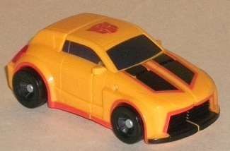
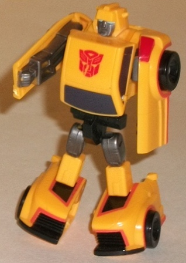
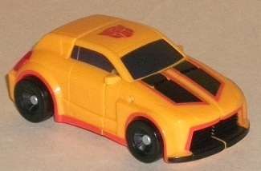
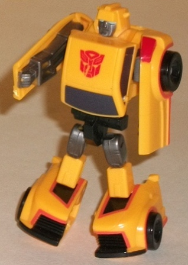
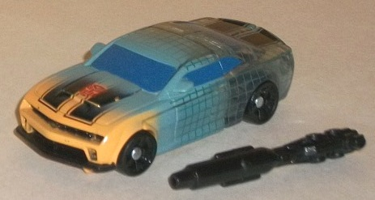
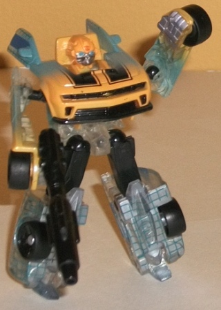
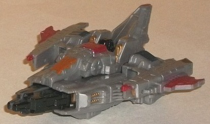
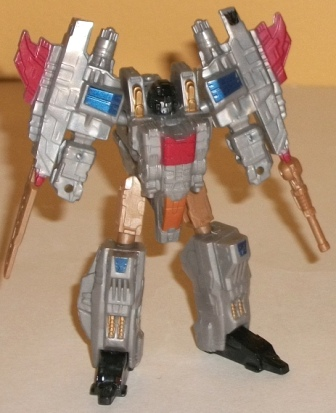
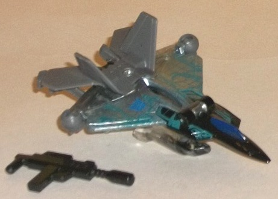
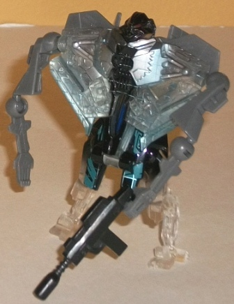

 
Allegiance : Autobot
Size : Legion
Difficulty of Transformation: Very Easy
Color Scheme : Light orangish yellow, black, black, and some metallic gunmetal gray, light blue, orange, red, and dark silvery metallic blue
Individual Rating : 7.7
 "Trans-Scan
Evolution" 4-pack (DotM) [Toys "R" Us Exclusive]
"Trans-Scan
Evolution" 4-pack (DotM) [Toys "R" Us Exclusive]
Set Price
: $20 U.S.
Overall Rating
: 7.0
(NOTE: Because this set is composed of repaints,
this is not a full-blown review. This mainly covers any changes made to
the set and the color scheme, and merely compares it to the original versions
of these molds. For a review on Universe 2.0 Legends G1 Bumblebee, the
mold used for "Then" Bumblebee, go
here
.
For a review on RotF Legends Bumblebee, the mold used for the "Now Trans-Scan"
Bumblebee, go
here
. For a review on
Legends of Cybertron Starscream, the mold used for "Then" Starscream, go
here
.
For a review on TF1 Legends Starscream, the mold used for the "Now Trans-Scan"
Starscream, go
here
.)
 Bumblebee
("Then")
Bumblebee
("Then")


Allegiance
: Autobot
Size
: Legion
Difficulty of Transformation:
Very
Easy
Color Scheme
: Light orangish yellow,
black, black, and some metallic gunmetal gray, light blue, orange, red,
and dark silvery metallic blue
Individual Rating
: 7.7
The point of this "Evolution"
set is to show how the respective characters have changed over the years,
so it makes sense to include a modern mold that closely emulates Bumblebee's
original G1 design. The thing is, this mold was already released in a color
scheme close to G1 Bee's, so what now? Well, to help "bridge the gap",
so to speak, this more G1-esque version of Bumblebee has been colored rather
like his movie version, with two bordered black stripes down the front
hood, and the yellow more of a "cheesy" orangish yellow than a straight
yellow. Although I'm not a huge fan of the yellow, the rest of the color
scheme (beyond the expected black) really works hard at breaking up all
of said yellow with myriad paint apps. I love the orange lines around the
front grill, stripes, and sides of the car mode-- they REALLY help to break
up the car mode and make it more visually interesting, along with the red
tail lights (though the headlights are oddly not painted). In robot mode,
the dark metallic gunmetal gray used for most of the robot detailing combines
with the dark silvery blue paint used on the windows and helps give Bumblebee
a bit more of a darker scheme on top of the black. Thus, even though this
version is still in "Bumblebee" colors, quite a lot of has been done to
help make it look different this time around.
No mold changes have
been made to this version of Bumblebee.
 Bumblebee
("Now" Trans-Scan)
Bumblebee
("Now" Trans-Scan)


Allegiance
: Autobot
Size
: Legion
Difficulty of Transformation
: Very
Easy
Color Scheme
: Black, clear plastic,
orangish yellow, and some silver, light pale sky blue, and moderately dark
blue
Individual Rating
: 8.0
This version of Bumblebee
uses the oft-used RotF Legends mold, and to help differentiate it from
the plethora of other versions of this mold out there, this one has a cool
"mid-scan" series of paint apps applied to it, like many of the other Dark
of the Moon Toys "R" Us Exclusives. The very front of the car-- and the
very top of the robot mode-- is colored like your average Movie Bumblebee
toy, complete with stripes along the front, but that quickly fades into
a rather cool light pale blue, which in turn then fades into mostly clear
plastic with a set of grid-like scan lines over it, as if Bumblebee weren't
quite done scanning the back end yet. The windows and stripes are still
painted on the back end, which all combines to form a VERY visually stunning
effect. The main colors-- black, yellow, and blue-- also go quite well
together, so there's no clashing problems here. In robot mode, the bottom
end is silver painted on the clear plastic (though the grid lines are still
visible), which leads to it looking like Bumblebee's reformatting himself
from Terminator-style liquid metal. Honestly, this is one of the coolest
color schemes I've seen on a toy, particularly one of this small size,
and there's a TON of paint apps on this little guy.
Largely no mold changes
have been made to this version of Bumblebee, BUT his one hand has been
remolded to hold Cyberverse-scaled weapons, and he does come with a two-part
long-barreled weapon that he can use (but can't be stored in vehicle mode,
unfortunately).
Starscream
("Then")


Allegiance
: Decepticon
Size
: Legion
Difficulty of Transformation
: Easy
Color Scheme
: Milky gray, milky
light brown, and some black, metallic brownish copper, dull red, dark metallic
blue, and silver
Individual Rating
: 8.2
Starscream's "Then" version
is represented, interestingly enough, not by a redeco of his
"G1"
Legends figure
but rather his Cybertron Legends version. I suppose
it's because it looks more Cybertronian and thus matches the set's bio
better, but still, Bumblebee's "Then" form doesn't look at all Cybertronian...
Anyways, this redeco still keeps Starscream's basic color scheme of gray,
red, black, and blue, but mixes up the amounts and shades of those colors.
The gray is darker on this version than on most Starscream toys, and although
it's still a somewhat dull color, it looks better than the light milky
gray used on too many other TFs. The red and blue are also a bit duller,
a paint change I'm not quite as enarmored with, but it still contrasts
well with the gray and bits of black. One new addition to Starscream's
"classic" color scheme that I like here is the light milky brown-- it really
gives Starscream's scheme just that touch it needs to get past the "been
there, done that" territory, and fits in with the earthy tones of the gray
and black as well. This brown is also complemented by the copper paint
apps on Starscream's cockpit and shoulders, and just looks pretty nice
overall, making this version's colors a minor step above the original's,
in my opinion.
No mold changes have
been made to this version of Starscream.
Starscream
("Now" Trans-Scan)


Allegiance
: Decepticon
Size
: Legion
Difficulty of Transformation
: Very
Easy
Color Scheme
: Dull brownish gray,
clear plastic, black, silver, and some light metallic silvery blue, dull
bluish green, dark glossy blue, and dull red
Individual Rating
: 3.8
Starscream's "Now" version
uses the same general style of Trans-Scan paint app gimmickry that the
Bumblebee in this 4-pack uses, in terms of him being his "normal" colors
at one end (in this case, the back end), then fading into a really neat
silver middle with a light blue "scanning" grid pattern painted over it.
What makes this particularly cool-looking on this figure is that Starscream's
tattoos also almost look like they're "glowing" in mid-scan, being the
bluish green that they are instead of the normal black. (Strictly from
a story sense, Starscream's tats shouldn't be here since he scanned his
alt mode some time BEFORE getting himself tattooed, but I'm willing to
overlook that given how cool this toy looks with them.) What's odd about
this scan pattern, however, is that the front end of Starscream is NOT
clear plastic. Well, okay, it IS, but it's been painted over with black
in jet mode for some reason. I mean, it LOOKS nice, but it goes against
the whole "Trans-Scan" thing of being clear plastic on one end. In robot
mode this looks a bit better with the clear plastic more obvious on the
legs, but it's not as seemless a transition as, say, Bumblebee's, given
that this Decepticon's robot mode goes from gray to silver-backed clear
plastic to black to clear plastic again. (Plus Starscream has his chest
painted black in robot mode, though I neither mind that nor like it enough
to give him an extra point on his rating.)
For the most part no
mold changes have been made to this version of Starscream, but in robot
mode his left hand has been remolded to hold most Cyberverse weapons, and
he comes with a little machine gun accessory that, unfortunately, can't
store in his vehicle mode.
The "Trans-Scan" Evolution 4-pack is a decent enough multi-pack if you're interested in character variants, or if you particularly like the Trans-Scan paint app gimmick (and I definitely do). Three of the four molds are winners, two, and even the one that isn't at least has a cool paint job. At only $20 U.S., this is a definite recommendation if you like Legions/Legends and don't have these molds (or even if you have the Movie molds)-- but if you have all four, the "Then" toys likely aren't going to be different enough from their originals for most non-completists to warrant another purchase.
*NOTE: The "Then" Bumblebee in this 4-pack has been released more than once since by itself, as a discount retailer store exclusive.
Reviews by Beastbot